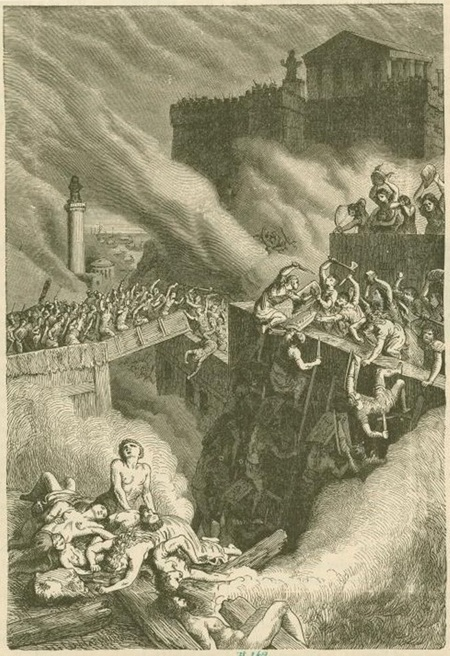

La Chute de Carthage

La capitulation
En 146 av. J.-C., après six jours de combats acharnés dans les rues de Carthage, la résistance s'effondre. Le général carthaginois Hasdrubal le Boétharque se rend à Scipion Émilien en suppliant pour avoir la vie sauve. Sa femme, refusant cette honte, se jette dans les flammes du temple de la citadelle avec leurs enfants, préférant mourir libre plutôt que de voir son mari s'agenouiller devant Rome.
Sur les 500 000 habitants que comptait Carthage avant le siège, seuls environ 50 000 survivants sont faits prisonniers. Ils seront vendus comme esclaves.
Source : Wikipedia — Destruction de Carthage
La destruction
Par ordre du Sénat romain, Carthage est entièrement rasée. Les bâtiments sont démolis pierre par pierre, et la ville brûle pendant dix-sept jours. Le mythe selon lequel Rome aurait semé du sel sur ses ruines pour que rien n'y pousse jamais est probablement une légende, mais il illustre bien la volonté romaine d'effacer Carthage de la carte pour toujours.
Le territoire de Carthage devient la province romaine d'Africa. Scipion Émilien, dit-on, pleura en voyant la ville brûler, citant les vers d'Homère sur la chute de Troie — conscient que le même destin pourrait un jour frapper Rome.
Source : Wikipedia — Destruction de Carthage
La fin d'une civilisation
La chute de Carthage marque la fin des guerres puniques et l'hégémonie totale de Rome sur la Méditerranée occidentale. Une civilisation vieille de plus de 600 ans disparaît en quelques jours. La langue punique, la culture et les traditions carthaginoises s'éteignent progressivement.
Ironiquement, Rome fondera plus tard une nouvelle ville sur l'emplacement de Carthage, qui deviendra l'une des grandes cités de l'Empire romain. Mais la Carthage punique, celle d'Hannibal et d'Hamilcar, n'existera plus jamais.
Source : Wikipedia — Destruction de Carthage